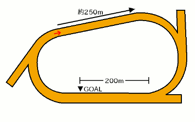

無料メルマガで連日の無料予想と秋G1の極秘情報もGETしよう!!
無料メルマガ登録フォーム
最終更新日：
YouTubeで登録者数6万人のうまめし競馬チャンネルを運営しているうまめし君です！
高知競馬場800mコースの特徴を分析して、競馬予想に役立つ傾向を探っていきたいと思います。
もくじ
競馬場特徴の一覧に戻る
札幌 函館 福島 新潟 東京 中山 中京 京都 阪神 小倉 地方 海外
無料メルマガで連日の無料予想と秋G1の極秘情報もGETしよう!!
無料メルマガ登録フォーム
無料メルマガで連日の無料予想と秋G1の極秘情報もGETしよう!!
無料メルマガ登録フォーム
高知ダ800mコースでの枠順と脚質別の成績を見ていきましょう。
1枠の成績は（1着11回・2着9回・3着4回・着外32回）で、勝率は19パーセント・連対率は35パーセント・複勝率は42パーセントとなっています。好枠 逃げ警戒 道悪実績
脚質別の馬券に絡むパーセンテージは逃げ：100％・先行：46％・差し：0％・追込：0％となっております。
2枠の成績は（1着8回・2着6回・3着10回・着外32回）で、勝率は14パーセント・連対率は25パーセント・複勝率は42パーセントとなっています。好枠 逃げ警戒 道悪実績
脚質別の馬券に絡むパーセンテージは逃げ：100％・先行：50％・差し：15％・追込：0％となっております。
3枠の成績は（1着8回・2着6回・3着10回・着外32回）で、勝率は14パーセント・連対率は25パーセント・複勝率は42パーセントとなっています。好枠 逃げ警戒 道悪実績
脚質別の馬券に絡むパーセンテージは逃げ：100％・先行：53％・差し：6％・追込：0％となっております。
4枠の成績は（1着5回・2着10回・3着9回・着外32回）で、勝率は8パーセント・連対率は26パーセント・複勝率は42パーセントとなっています。 逃げ警戒 道悪実績
脚質別の馬券に絡むパーセンテージは逃げ：100％・先行：52％・差し：11％・追込：0％となっております。
5枠の成績は（1着6回・2着8回・3着5回・着外41回）で、勝率は10パーセント・連対率は23パーセント・複勝率は31パーセントとなっています。 逃げ警戒 道悪実績
脚質別の馬券に絡むパーセンテージは逃げ：100％・先行：40％・差し：4％・追込：0％となっております。
6枠の成績は（1着7回・2着4回・3着5回・着外31回）で、勝率は14パーセント・連対率は23パーセント・複勝率は34パーセントとなっています。好枠 逃げ警戒 道悪実績
脚質別の馬券に絡むパーセンテージは逃げ：100％・先行：48％・差し：0％・追込：0％となっております。
7枠の成績は（1着7回・2着7回・3着4回・着外28回）で、勝率は15パーセント・連対率は30パーセント・複勝率は39パーセントとなっています。好枠 逃げ警戒 道悪実績
脚質別の馬券に絡むパーセンテージは逃げ：100％・先行：44％・差し：8％・追込：0％となっております。
8枠の成績は（1着4回・2着6回・3着9回・着外32回）で、勝率は7パーセント・連対率は19パーセント・複勝率は37パーセントとなっています。 逃げ警戒
脚質別の馬券に絡むパーセンテージは逃げ：87％・先行：46％・差し：0％・追込：0％となっております。
下の表は枠を考慮しない脚質成績
| 逃げ | 先行 | 差し | 追込 | |
|---|---|---|---|---|
| 勝 率 | 62% | 9% | 0% | 0% |
| 連対率 | 83% | 28% | 2% | 0% |
| 複勝率 | 98% | 47% | 5% | 0% |
無料メルマガで連日の無料予想と秋G1の極秘情報もGETしよう!!
無料メルマガ登録フォーム
高知競馬800mはバックストレッチ側の2コーナー寄りからスタートして、3コーナーと4コーナーをまわり、ホームストレッチへ入るワンターンのコースレイアウトです。

高知競馬場800mコースの特徴としては、スタートしてから最初のコーナーまでが約250mと短いにも関わらず、3コーナーと4コーナーでの方向転換角度が合計180度を超えるというところです。
この方向転換角度が大きければ大きいほど、コーナーで外側を走る馬にとっては不利になるわけです。ただ、高知競馬場のインは砂が深いので、一概に内枠に入れば良いとも言い切れません。
高知競馬の800mコースでは2枠と3枠が有利です。外枠でも最初のコーナーまでの約250mの直線で内の先行馬を交わして先頭に立てば不利にはなりません。
1枠は逆に外からプッシュされて砂の深いインコースに追いやられやすく、スタートダッシュに失敗すると馬群に包まれて抜け出せなくなるため有利になる事は少ないですね。
高知ダ800mコースでの人気別の成績を見ていきましょう。
1番人気の成績は（1着26回・2着15回・3着7回・着外8回）で、勝率は46パーセント・連対率は73パーセント・複勝率85パーセントとなっています。
脚質別の馬券に絡むパーセンテージは逃げ：100％・先行：85％・差し：0％・追込：0％となっております。
2番人気の成績は（1着12回・2着11回・3着11回・着外22回）で、勝率は21パーセント・連対率は41パーセント・複勝率60パーセントとなっています。
脚質別の馬券に絡むパーセンテージは逃げ：92％・先行：58％・差し：0％・追込：0％となっております。
3番人気の成績は（1着10回・2着8回・3着14回・着外24回）で、勝率は17パーセント・連対率は32パーセント・複勝率57パーセントとなっています。
脚質別の馬券に絡むパーセンテージは逃げ：100％・先行：61％・差し：0％・追込：0％となっております。
4番人気の成績は（1着2回・2着11回・3着13回・着外30回）で、勝率は3パーセント・連対率は23パーセント・複勝率46パーセントとなっています。
脚質別の馬券に絡むパーセンテージは逃げ：100％・先行：53％・差し：16％・追込：0％となっております。
5番人気の成績は（1着2回・2着6回・3着6回・着外39回）で、勝率は3パーセント・連対率は15パーセント・複勝率26パーセントとなっています。
脚質別の馬券に絡むパーセンテージは逃げ：100％・先行：27％・差し：23％・追込：0％となっております。
6番人気の成績は（1着2回・2着2回・3着3回・着外33回）で、勝率は5パーセント・連対率は10パーセント・複勝率17パーセントとなっています。
脚質別の馬券に絡むパーセンテージは逃げ：100％・先行：23％・差し：5％・追込：0％となっております。
7番人気の成績は（1着1回・2着2回・3着1回・着外31回）で、勝率は2パーセント・連対率は8パーセント・複勝率11パーセントとなっています。
脚質別の馬券に絡むパーセンテージは逃げ：100％・先行：22％・差し：4％・追込：0％となっております。
8番人気の成績は（1着1回・2着1回・3着1回・着外30回）で、勝率は3パーセント・連対率は6パーセント・複勝率9パーセントとなっています。
脚質別の馬券に絡むパーセンテージは逃げ：100％・先行：10％・差し：0％・追込：0％となっております。
高知ダ800コースでの騎手成績を詳細に見ていきましょう。
多田誠騎手の成績は5-5-2-6で、1~4番人気での成績は5-5-2-3で、5番人気以下の人気薄での騎乗成績は0-0-0-3でした。
宮川実騎手の成績は5-3-3-3で、1~4番人気での成績は5-3-3-3で、5番人気以下の人気薄での騎乗成績は0-0-0-0でした。
岡遼太騎手の成績は4-3-6-10で、1~4番人気での成績は4-2-4-1で、5番人気以下の人気薄での騎乗成績は0-1-2-9でした。
畑中信騎手の成績は3-3-3-13で、1~4番人気での成績は3-3-2-7で、5番人気以下の人気薄での騎乗成績は0-0-1-6でした。
塚本雄騎手の成績は3-2-2-7で、1~4番人気での成績は3-1-2-3で、5番人気以下の人気薄での騎乗成績は0-1-0-4でした。
村上弘騎手の成績は3-1-0-4で、1~4番人気での成績は2-1-0-2で、5番人気以下の人気薄での騎乗成績は1-0-0-2でした。
赤岡修騎手の成績は3-2-0-1で、1~4番人気での成績は3-2-0-1で、5番人気以下の人気薄での騎乗成績は0-0-0-0でした。
山崎雅騎手の成績は3-2-5-15で、1~4番人気での成績は3-2-5-5で、5番人気以下の人気薄での騎乗成績は0-0-0-10でした。
岡村卓騎手の成績は3-6-4-25で、1~4番人気での成績は3-5-2-11で、5番人気以下の人気薄での騎乗成績は0-1-2-14でした。
永森大騎手の成績は3-4-6-4で、1~4番人気での成績は3-4-6-1で、5番人気以下の人気薄での騎乗成績は0-0-0-3でした。
林謙佑騎手の成績は2-4-5-13で、1~4番人気での成績は2-3-3-4で、5番人気以下の人気薄での騎乗成績は0-1-2-9でした。
大澤誠騎手の成績は2-0-0-18で、1~4番人気での成績は2-0-0-2で、5番人気以下の人気薄での騎乗成績は0-0-0-16でした。
石本純騎手の成績は2-0-0-12で、1~4番人気での成績は1-0-0-1で、5番人気以下の人気薄での騎乗成績は1-0-0-11でした。
上田将騎手の成績は2-2-1-3で、1~4番人気での成績は1-2-1-0で、5番人気以下の人気薄での騎乗成績は1-0-0-3でした。
郷間勇騎手の成績は2-2-4-14で、1~4番人気での成績は1-1-3-5で、5番人気以下の人気薄での騎乗成績は1-1-1-9でした。
嬉勝則騎手の成績は2-2-1-4で、1~4番人気での成績は1-1-1-4で、5番人気以下の人気薄での騎乗成績は1-1-0-0でした。
井上瑛騎手の成績は2-3-4-14で、1~4番人気での成績は2-2-3-5で、5番人気以下の人気薄での騎乗成績は0-1-1-9でした。
濱尚美騎手の成績は1-0-0-4で、1~4番人気での成績は1-0-0-2で、5番人気以下の人気薄での騎乗成績は0-0-0-2でした。
木村直騎手の成績は1-2-0-27で、1~4番人気での成績は0-1-0-4で、5番人気以下の人気薄での騎乗成績は1-1-0-23でした。
田口貫騎手の成績は1-0-0-0で、1~4番人気での成績は1-0-0-0で、5番人気以下の人気薄での騎乗成績は0-0-0-0でした。
中島良騎手の成績は1-0-0-6で、1~4番人気での成績は0-0-0-2で、5番人気以下の人気薄での騎乗成績は1-0-0-4でした。
城野慈騎手の成績は1-0-0-7で、1~4番人気での成績は1-0-0-1で、5番人気以下の人気薄での騎乗成績は0-0-0-6でした。
吉原寛騎手の成績は1-0-0-0で、1~4番人気での成績は1-0-0-0で、5番人気以下の人気薄での騎乗成績は0-0-0-0でした。
阿部基騎手の成績は1-1-2-14で、1~4番人気での成績は1-1-2-4で、5番人気以下の人気薄での騎乗成績は0-0-0-10でした。
妹尾浩騎手の成績は0-2-1-6で、1~4番人気での成績は0-2-1-3で、5番人気以下の人気薄での騎乗成績は0-0-0-3でした。
仲原大騎手の成績は0-0-1-4で、1~4番人気での成績は0-0-0-0で、5番人気以下の人気薄での騎乗成績は0-0-1-4でした。
倉兼育騎手の成績は0-1-2-6で、1~4番人気での成績は0-1-1-3で、5番人気以下の人気薄での騎乗成績は0-0-1-3でした。
西森将騎手の成績は0-0-4-11で、1~4番人気での成績は0-0-4-4で、5番人気以下の人気薄での騎乗成績は0-0-0-7でした。
松木大騎手の成績は0-1-0-0で、1~4番人気での成績は0-1-0-0で、5番人気以下の人気薄での騎乗成績は0-0-0-0でした。
松本大騎手の成績は0-1-0-0で、1~4番人気での成績は0-1-0-0で、5番人気以下の人気薄での騎乗成績は0-0-0-0でした。
所 蛍騎手の成績は0-1-2-5で、1~4番人気での成績は0-0-2-1で、5番人気以下の人気薄での騎乗成績は0-1-0-4でした。
佐原秀騎手の成績は0-2-0-6で、1~4番人気での成績は0-1-0-3で、5番人気以下の人気薄での騎乗成績は0-1-0-3でした。
及川烈騎手の成績は0-1-0-0で、1~4番人気での成績は0-0-0-0で、5番人気以下の人気薄での騎乗成績は0-1-0-0でした。
どの種牡馬の産駒がどの程度馬券に絡んでいるのか、種牡馬ごとに馬券に絡んだ回数をカウントしたのが以下の表です。血統の系統別に馬名を色分けしています。
■ヘイルトゥリーズン系
■サンデーサイレンス系
■ミスプロ系・キングマンボ系
■ノーザンダンサー系
■エーピーインディ系
| 種牡馬名 | 勝利回数 |
|---|---|
| マジェスティックウォリアー | 5 |
| ダンカーク | 3 |
| ルーラーシップ | 2 |
| モズアスコット | 2 |
| モーニン | 2 |
| フォーウィールドライブ | 2 |
| デクラレーションオブウォー | 2 |
| ディスクリートキャット | 2 |
| ダノンレジェンド | 2 |
| ゴールドシップ | 2 |
| コパノリッキー | 2 |
| エピカリス | 2 |
| リオンディーズ | 1 |
| リアルインパクト | 1 |
| メイショウボーラー | 1 |
| ミッキーアイル | 1 |
| マクフィ | 1 |
| マインドユアビスケッツ | 1 |
| ヘニーヒューズ | 1 |
| ファインニードル | 1 |
| 種牡馬名 | 勝利回数 |
|---|---|
| マジェスティックウォリアー | 5 |
| ダンカーク | 3 |
| ルーラーシップ | 2 |
| モズアスコット | 2 |
| モーニン | 2 |
| フォーウィールドライブ | 2 |
| デクラレーションオブウォー | 2 |
| ディスクリートキャット | 2 |
| ダノンレジェンド | 2 |
| ゴールドシップ | 2 |
| コパノリッキー | 2 |
| エピカリス | 2 |
| リオンディーズ | 1 |
| リアルインパクト | 1 |
| メイショウボーラー | 1 |
| ミッキーアイル | 1 |
| マクフィ | 1 |
| マインドユアビスケッツ | 1 |
| ヘニーヒューズ | 1 |
| ファインニードル | 1 |
| パイロ | 1 |
| バンブーエール | 1 |
| バトルプラン | 1 |
| ニシケンモノノフ | 1 |
| トランセンド | 1 |
| トゥザワールド | 1 |
| ディーマジェスティ | 1 |
| タワーオブロンドン | 1 |
| タリスマニック | 1 |
| スマートファルコン | 1 |
| ジャングルポケット | 1 |
| サトノクラウン | 1 |
| サウスヴィグラス | 1 |
| エイシンフラッシュ | 1 |
| アレスバローズ | 1 |
| アメリカンペイトリオット | 1 |
| アジアエクスプレス | 1 |
| Oscar Performance | 1 |
| American Pharoah | 1 |
無料メルマガで連日の無料予想と秋G1の極秘情報もGETしよう!!
無料メルマガ登録フォーム
| 種牡馬名 | 勝利回数 |
|---|---|
| マジェスティックウォリアー | 4 |
| モーニン | 2 |
| デクラレーションオブウォー | 2 |
| ディスクリートキャット | 2 |
| ダンカーク | 2 |
| ダノンレジェンド | 2 |
| ゴールドシップ | 2 |
| コパノリッキー | 2 |
| エピカリス | 2 |
| ルーラーシップ | 1 |
| リオンディーズ | 1 |
| リアルインパクト | 1 |
| モズアスコット | 1 |
| メイショウボーラー | 1 |
| マインドユアビスケッツ | 1 |
| フォーウィールドライブ | 1 |
| ファインニードル | 1 |
| パイロ | 1 |
| バンブーエール | 1 |
| バトルプラン | 1 |
| トゥザワールド | 1 |
| タワーオブロンドン | 1 |
| タリスマニック | 1 |
| スマートファルコン | 1 |
| サトノクラウン | 1 |
| エイシンフラッシュ | 1 |
| アレスバローズ | 1 |
| アジアエクスプレス | 1 |
| Oscar Performance | 1 |
| American Pharoah | 1 |
無料メルマガで連日の無料予想と秋G1の極秘情報もGETしよう!!
無料メルマガ登録フォーム
※当ページへのリンクや、論文・SNSでの紹介などは大歓迎です。単なるコピペパクリなど引用の法的要件を満たさない記事泥棒的な転載は禁止です。